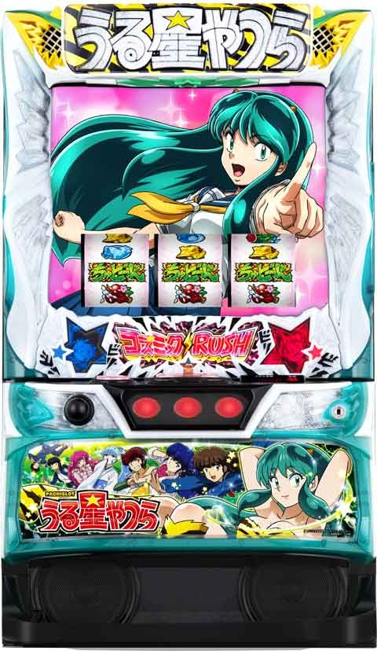

Lうる星やつら

[天井情報]
555G+α ボーナス確定
リセット時、46.9%で天国モード
あたる逃走中を5回連続スルー 次回ボーナスでAT確定
[リセット判別]
不明
[有利区間について]
差枚+2200枚でエンディング
エンディング後、あたる激走中に突入し66%でATに復帰。
狙い目
※CZで G数ズレるため液晶の G数で判断。
[ボーナス間天井狙い]
360Gから(モード示唆等弱い時)
※示唆や爆弾コンプの状況でボーダー調整
[スルー天井狙い]
5スルー 0Gから
4スルー
積極派 0 Gから
慎重派 70Gから
3スルー
積極派 260GからATまで
[ゾーン狙い]
111ゾーン狙い 90 Gから
333ゾーン狙い 310 Gから
[モード示唆狙い]
・単体で打てそう
メニュー画面カード 赤、金、虹
演出失敗時ボイス ラム
お菓子カード ラム
※青カードのラムのUFOは怒りMAXの示唆。積極派はATまで？
・ボーダー下げれそう-100 G
メニュー画面カード 橙
演出失敗時ボイス あたる
お菓子カード あたる
・ボーダー下げれそう -50G
メニュー画面カード 緑(メガネ、面堂)
{kind=link}
{kind=link}
[爆弾コンプ狙い]
単体は5個以上から
4個
積極派 単体
慎重派 -100 G
3個 -50G
{kind=link}
[有利区間切れ狙い]
不明
[リセット狙い]
0スルー 111ゾーン狙い 40Gから
0スルー 270Gからボーナス当選まで
やめ時
あたる逃走中失敗後、AT終了後、前兆確認してやめ？
その他
モード、モード別ゲーム数テーブル
{kind=link}
{kind=link}
モード示唆演出
{kind=link}
参考元
基本情報
- メーカー: ニューギン
- 機械割: 97.6% 〜 110.1%
- 導入開始日: 2024年04月08日（月）
- ゲーム性概要: 通常時は共通ベル・レア役で電池ポイントを5pt貯めるごとに1回「ちゅどーんを狙え!!」が発生。ちゅどーんが停止した位置に対応したビンゴラインが点灯していき、ビンゴになればCZやボーナスを抽選。ゲーム数消化によるボーナス抽選もある。 出玉増加の鍵となるATは基本的に初当りボーナス後のCZ「あたる逃走中」をクリアすれば突入。AT当選後は開始時のガールハントタイムで初期ゲーム数を決定（平均100G）、消化中は通常時同様のビンゴやレア役でゲーム数上乗せやボーナス、特化ゾーンが抽選される。 AT完走（エンディング）時は、引き戻し期待度約66%のCZ「あたる激走中」に突入する仕様になる。


打ち方
打ち方・小役
打ち方（小役狙い）
［最初に狙う絵柄］

左リール上段付近にBARを目押し。黒BAR、ちゅどーんのどちらでもOKだ。
［BAR下段停止］ 成立役：ハズレorリプレイorベルorチャンス目

［角チェリー停止］ 成立役：弱チェリーor強チェリー

［スイカ上段停止］ 成立役：スイカorチャンス目

［レア役・共通ベルの停止例］

変則押しはNG

ナビ非発生時は左1stでの消化を推奨。変則押しをすると画面が暗転する。
解析情報通常時
小役関連
小役確率
| 役 | 確率 |
|---|---|
| リプレイ | 1/8.7 |
| 共通ベル | 1/8.1 |
| 弱チェリー | 1/79.9 |
| スイカ | 1/91.0 |
| チャンス目 | 1/136.5 |
| 強チェリー | 1/256.0 |
| レア役合算 | 1/28.8 |
雷ライズゾーン当選率
| 役 | 通常中 | 高確中 | 超高確中 |
|---|---|---|---|
| 押し順ベル | 1.0% | 2.0% | 3.9% |
| スイカ | 15.6% | 31.3% | 100% |
| 弱チェリー | 15.6% | 31.3% | 100% |
| チャンス目 | 31.3% | 62.5% | 100% |
| 強チェリー | 50.0% | 75.0% | 100% |
内部状態関連
高確・超高確概要
おもに弱チェリーとスイカで状態アップを抽選。高確中は雷ライズゾーン突入期待度アップ、超高確中はボーナス直撃にも期待できる。
内部状態ごとの特徴
| 内部状態 | 特徴 |
|---|---|
| 通常 | デフォルト |
| 高確 | 雷ライズゾーン当選率アップ |
| 超高確 | 雷ライズゾーン＆ボーナス直撃当選率アップ |
高確・超高確移行率
| 役 | 通常→高確 | 通常→超高確 | 高確→超高確 |
|---|---|---|---|
| 押し順ベル | 2.0% | － | 2.0% |
| 弱チェリー | 71.9% | 3.1% | 75.0% |
| スイカ | 49.2% | 0.8% | 50.0% |
モード
モードごとのゲーム数天井
| モード | 天井 |
|---|---|
| 通常A | 555G＋α |
| 通常B | 555G＋α |
| 通常C | 555G＋α |
| 通常D | 333G＋α |
| 天国 | 111G＋α |
モードごとの特徴
| モード | 特徴 |
|---|---|
| 通常A | 基本のモード |
| 通常B | 通常Aより早く当たりやすく、 高設定ほど選ばれやすい |
| 通常C | 滞在中のAT当選終了後はあたる激走中に突入 |
| 通常D | 天井が333G＋α |
| 天国 | 天井が111G＋α |
モードごとのゲーム数テーブル
| ゲーム数 | 通常A | 通常B | 通常C | 通常D | 天国 |
|---|---|---|---|---|---|
| 0G～ | △ | △ | △ | △ | △ |
| 111G～ | ◯ | ◯ | △ | ◯ | 天井 |
| 222G～ | △ | △ | ◯ | △ | － |
| 333G～ | ◯ | ◯ | △ | 天井 | － |
| 444G～ | △ | ◯ | ◯ | － | － |
| 555G～ | 天井 | 天井 | 天井 | － | － |
150Gまでのボーナス当選平均期待度は約45%。
電池ポイント＆爆弾コンプシステム
電池ポイント＆爆弾コンプシステム概要

共通ベル（上段揃い）時にポイント獲得が抽選され、レア役時は1pt以上獲得濃厚。 5ptになれば「ちゅどーんを狙え!!」がストックされ、フラグ成立時にカットインが発生してちゅどーんが1個以上停止 する。ちゅどーんが停止したリール（左or中or右）に応じてビンゴマス（爆弾コンプシステム）が点灯していき、ビンゴしたときのライン数に応じてCZやボーナスが抽選される。
電池ポイント獲得契機
| 役 | 電池ポイント |
|---|---|
| 共通ベル | 抽選で獲得 |
| レア役（強チェリー以外） | ポイント獲得濃厚 |
| 強チェリー | 複数ポイント獲得濃厚 |
電池ポイントがMAX（ちゅどーんを狙えストック）になる確率は約1/42。
爆弾コンプのビンゴ数別恩恵
| ビンゴ | 恩恵 |
|---|---|
| 1ライン | CZ当選期待度約30% |
| 2ライン | CZ以上濃厚 |
| 3ライン | AT直撃濃厚 |
［ちゅどーんを狙え］

発生した時点で必ず1個以上停止。通常時は電池ポイントが貯まったときにのみ発生する。
［爆弾コンプシステムのビンゴライン］

ちゅどーんが左リールに止まった場合は左のマスが、右リールに止まれば右のマスが点灯していき、縦・横・斜めいずれかのビンゴが成立すればライン数に応じた抽選がおこなわれる。ちゅどーん揃いはビンゴ確定だけでなく、AT当選確定＋ロングフリーズ発生のチャンスだ。
［ビンゴマス］


ちゅどーんを狙え確率（ちゅどーんストック時）
| ちゅどーん停止個数 | 確率 |
|---|---|
| １個 | 1/3.7 |
| 2個 | 1/14.6 |
| ３個 | 1/993.0 |
| 合算 | 1/2.9 |
爆弾コンプのスルー回数天井
爆弾コンプの1ライン成立時のスルー回数には天井があり、9スルー目の次回（10回目）はCZ当選濃厚。スルー回数はボーナスやATに当選しても、CZに当選するまでリセットされない。
裏ボタンによる残り回数示唆はコチラ
通常時の電池ポイント当選率
共通ベルは内部状態で当選率が変化。獲得するポイントは1pt固定だ。レア役は内部状態不問で抽選され、1回で最大5ptまで獲得する可能性がある。
［共通ベル］内部状態ごとの電池ポイント当選率
| 内部状態 | 1pt獲得 |
|---|---|
| 通常滞在時 | 3.1% |
| 高確滞在時 | 12.5% |
| 超高確滞在時 | 31.3% |
［レア役］電池ポイント当選率
| 獲得 | スイカ | 弱チェリー | チャンス目 | 強チェリー |
|---|---|---|---|---|
| 1pt | 98.4% | 96.9% | 87.5% | － |
| 2pt | － | 1.6% | 6.3% | 87.5% |
| 3pt | － | 0.8% | 3.1% | 6.3% |
| 4pt | － | 0.4% | 1.6% | 3.1% |
| 5pt | 1.6% | 0.4% | 1.6% | 3.1% |
雷ライズモード
雷ライズモード概要

リプレイ以外で電池ポイントを獲得できる電池ポイント特化ゾーン。
雷ライズモード性能
| 項目 | 内容 |
|---|---|
| 当選契機 | 通常時のレア役など |
| 移行確率 | 約1/58 |
| 平均獲得電池ポイント | 6.5pt |
| 消化中の抽選 | 成立役に応じて電池ポイント獲得 （共通ベル・レア役で複数ポイント濃厚） |
雷ライズモード中の電池ポイント当選率
| 獲得 | その他 | リプレイ | 共通ベル |
|---|---|---|---|
| 0pt | － | 100% | － |
| 1pt | 84.4% | － | － |
| 2pt | 15.6% | － | 56.3% |
| 3pt | － | － | 25.0% |
| 4pt | － | － | 12.5% |
| 5pt | － | － | 6.3% |
| 獲得 | 弱チェリー | スイカ | 強レア役 |
| 0pt | － | － | － |
| 1pt | － | － | － |
| 2pt | － | － | － |
| 3pt | 75.0% | 75.0% | － |
| 4pt | 25.0% | － | － |
| 5pt | － | 25.0% | 100% |
あたるナンパステージ
あたるナンパステージ概要

終了後に突入する友引ウォーズのボーナス当選期待度をアップさせる10G間のゾーンで、小役が入賞するほど画面右上に表示されたレベル（ボーナス当選期待度）がアップ。昼・夕2種類のステージがあり、夕ステージならチャンスアップだ。
ナンパステージのレベルアップ抽選
| 役 | 抽選 |
|---|---|
| リプレイ・ベル | レベルアップ抽選 |
| レア役（強チェリー以外） | レベルアップ濃厚 |
| 強チェリー | レベルアップ濃厚＋ 複数レベルアップの期待大 |
［昼ステージ］

［夕ステージ］

レベルアップ当選率
| 女の子のプレート色 | 昼 | 夕方 |
|---|---|---|
| 白 | 7.77% | 21.09% |
| 青 | 18.21% | 52.67% |
| 黄 | 52.81% | 82.06% |
| 紫 | 100% | 100% |
友引ウォーズ/最後の鬼ごっこ
友引ウォーズ概要

ステージがアップ（エフェクトが変化）するほどボーナス本前兆期待度がアップ。ラストは連続演出でボーナス当選の有無が告知される。突入した時点で ボーナス期待度は約40% ！
［ステージのエフェクト］

白＜青＜緑＜赤＜虹の順で期待できる。
［ジャッジ時の連続演出］

最後の鬼ごっこ概要

平均期待度約87%の上位前兆だ。
金ラム変身チャンス（CZ）
金ラム変身チャンス概要

成立役に応じてボルトをアップさせていき、最終的なボルト数でボーナス・AT当選をジャッジ。「ちゅどーんを狙え!!」は、ちゅどーんが停止したリールに対応したボルトを獲得できる。
金ラム変身チャンス（CZ）性能
| 項目 | 内容 |
|---|---|
| 当選契機 | 爆弾コンプシステムのビンゴ |
| ボーナス当選期待度 | 40.9% |
| 滞在中のちゅどーん狙え確率 | 1/2.9 |
消化中にBGMが変化した場合は成功濃厚だ。
［ちゅどーん停止］

2個止まれば2個分のボルトを獲得できる。
［CZ中］ちゅどーんを狙え確率
| ちゅどーん停止個数 | 確率 |
|---|---|
| １個 | 1/3.9 |
| 2個 | 1/11.7 |
| ３個 | 1/993.0 |
| 合算 | 1/2.9 |
いまわの際チャンス（上位CZ）
いまわの際チャンス概要

CZ当選時の一部で突入するボーナスorAT濃厚パターンだ。
いまわの際チャンス（上位CZ）性能
| 項目 | 内容 |
|---|---|
| 当選契機 | 爆弾コンプシステムのビンゴ |
| ボーナス当選期待度 | ボーナスorAT濃厚 |
| 移行先割合 | ボーナス：53.1%、AT：46.9% |
怒りポイント
怒りポイント概要

あたる逃走中（ボーナス後のATチャレンジ）失敗ごとに蓄積するポイントで、MAX状態でATに当選すると平均上乗せ約180Gと強力な「超ガールハントタイム」からスタートする。
直撃抽選
ボーナス直撃当選率
見た目上ではわからないが、内部的に雷ライズモード当選時にボーナスへの昇格抽選をおこなっていて、当選した場合はボーナス直撃という形で表示される。抽選はレア役の種類不問なので、超高確中は直撃のチャンスとなる（超高確中のレア役は雷ライズモード濃厚）。
雷ライズモード当選時のボーナス直撃当選確率
| 設定 | 確率（当選率） |
|---|---|
| 1 | 1/128（0.8%） |
| 2 | 1/85（1.2%） |
| 4 | 1/64（1.6%） |
| 5 | 1/43（2.3%） |
| 6 | 1/32（3.1%） |
演出動画
ロングフリーズ
ちゅどーん揃いの一部で発生。1G×99%で上乗せが抽選され、獲得したゲーム数がATの初期ゲーム数となる。さらに、あたる激走中への突入も確定するのでATのループにも期待できるぞ。
フリーズ
ロングフリーズ


通常時におけるちゅどーん揃い（3個停止）の一部で発生。200G保証で、ループ抽選に漏れるまでゲーム数がどんどん加算されていく。
ロングフリーズ性能
| 項目 | 内容 |
|---|---|
| 当選契機 | ちゅどーん揃い時の一部（通常時限定） |
| 恩恵 | AT200G＋1G×99%ループ（平均296G） ＋あたる激走 |
| 平均期待枚数 | 1811枚（設定1） |
解析情報ボーナス時
ツラヌキ・有利区間
ツラヌキ条件＆恩恵
| 項目 | 内容 |
|---|---|
| ツラヌキ条件 | 有利区間移行時、エンディング到達時 |
| 恩恵 | あたる激走中に突入 |
エンディング到達後はAT終了後に「あたる激走中」へ突入するようになるため、ATループに期待できる。有利区間が切れる条件は規定枚数（MY）は有利区間移行時に決まっていて、1200枚、1500枚、1800枚、2100枚、2400枚のいずれかから選択される。
ボーナス（ラム・電撃）
ボーナス概要
ラムボーナス、電撃ボーナスともに通常時（初当り時）は消化中のレア役で、終了後に突入する「あたる逃走」を有利に進める身代わり丸太を抽選。AT中はATゲーム数の上乗せを抽選する（当選した時点で最低＋5G以上獲得）。
ボーナス性能
| 項目 | 内容 | |
|---|---|---|
| 平均獲得枚数 | ラムボーナス：50枚、電撃ボーナス：100枚 | |
| 消化中の 抽選 | 通常時 | ハズレやレア役で「身代わり丸太」抽選 |
| 消化中の 抽選 | AT中 | レア役でATゲーム数上乗せ濃厚 |
［電撃ボーナス］

［ラムボーナス］

ボーナス準備中の昇格抽選

ボーナス準備中は押し順ベルとレア役で、ラムボーナス時は電撃ボーナスへ、電撃ボーナス時はATへの昇格が抽選される。
ボーナス準備中の種別昇格率
| 役 | ラム→電撃ボーナス | 電撃ボーナス→AT |
|---|---|---|
| 押し順ベル | 3.1% | 0.2% |
| 弱チェリー | 6.3% | 0.4% |
| スイカ | 6.3% | 0.4% |
| チャンス目 | 15.6% | 0.8% |
| 強チェリー | 31.3% | 1.6% |
［チェンジ発生で昇格］

身代わり丸太当選率

ボーナス（ラムボーナス・電撃ボーナス）中はハズレとレア役で身代わり丸太の獲得を抽選。基本的にミッション（連続演出）を経由して成否が告知される。
ボーナス中の身代わり丸太当選率
| 役 | 当選率 |
|---|---|
| ハズレ | 2.0% |
| 弱チェリー | 6.3% |
| スイカ | 12.5% |
| チャンス目 | 50.0% |
| 強チェリー | 100% |
［ミッション］

あたる逃走中
あたる逃走中概要

初当りボーナス後に突入するAT当選をかけたCZ。33G間、逃げ切ることができればATに突入する。リプレイ時に状態転落抽選をおこない、最終的にデンジャー状態に落ちた状態でリプレイを引くと終了の大ピンチ。ボーナス中や逃走中に獲得できるアイテムでCZを有利に進めることができる。 終了時はラスネコジャッジで復帰を抽選する。
あたる逃走中 性能
| 項目 | 内容 |
|---|---|
| 突入契機 | 初当りボーナス終了後 |
| ボーナス当選期待度 | 約40% |
| リプレイ確率 | 1/8.7 |
| AT当選までの最大ゲーム数 | 33G（平均19G） |
| 消化中の抽選 | リプレイで状態転落抽選、 おもにレア役でアイテム獲得抽選 |
突入ルート詳細
| No. | ルート |
|---|---|
| 1 | ロングフリーズ |
| 2 | 通常Cであたる逃走中を突破 （裏ボタン判別あり） |
| 3 | 規定獲得枚数（MY）到達 （1200枚or1500枚or1800枚or2100枚or2400枚） |
| 4 | エンディング到達後 |
規定獲得枚数は有利区間移行時に決定。あたる逃走中開始時にボタンを押して液晶上側の星ランプが点滅すれば通常C滞在が濃厚となる。
アイテム一覧
| アイテム | 効果 |
|---|---|
| 身代わり丸太 | デンジャー状態でリプレイを引いてもセーフ |
| 透明マント | 発動中はリプレイを引いても状態が転落しない |
| 加速装置 | 残り距離を短縮 |
| ラム親衛隊 | デンジャー状態から通常状態復帰のチャンス |
［セーフティー状態］

あたるがラムに見つかっていない状態ではリプレイを引いてもデンジャー状態移行のピンチとなるだけで、即CZが終了することはない。
［デンジャー状態］

ラムに見つかっている状態でリプレイを引くとCZ終了の大ピンチだ。
［加速装置］

［身代わり丸太］

［透明マント］

［ラム親衛隊］

［ラスネコジャッジ］

アイテム当選＆転落抽選
あたる逃走中はレア役でアイテム獲得を抽選して、当選時は身代わり丸太か透明マントを獲得できる。アイテム非当選だった場合、レア役の種類に応じてゲーム数減算（距離短縮）を抽選。リプレイ時は約94%で状態転落（デンジャー状態〜ラスネコジャッジ）となる。チャンス目と強チェリーでアイテムを獲得できなかった場合は成功（AT）が確定する。
あたる逃走中のアイテム当選率
| 役 | 当選率 |
|---|---|
| スイカ | 50.00% |
| 弱チェリー | 50.00% |
| チャンス目 | 93.75% |
| 強チェリー | 87.50% |
アイテム当選時の獲得アイテム振り分け
| アイテム | 振り分け |
|---|---|
| 身代わり丸太 | 約25% |
| 透明マント | 約75% |
リプレイ時の状態移行率
| 状態 | 当選率 |
|---|---|
| 維持 | 6.25% |
| 転落 | 93.75% |
※転落…通常状態ではデンジャー状態、デンジャー状態ではラスネコジャッジへ
ラスネコジャッジ中のあたる逃走復帰確率
| 抽選値 | 確率 |
|---|---|
| あたる逃走へ復帰 | 1/9.84 （レア役は復帰濃厚） |
身代わり丸太の所持数別クリア期待度
| 所持数 | 期待度 |
|---|---|
| 0個 | 40.4% |
| 1個 | 45.4% |
| 2個 | 50.0% |
| 3個 | 54.2% |
| 4個 | 58.0% |
| 5個 | 61.5% |
透明マントの継続（無敵）ゲーム数振り分け
| ゲーム数 | 期待度 |
|---|---|
| 3G | 50.00% |
| 4G | 25.00% |
| 5G | 12.50% |
| 6G | 6.25% |
| 7G | 3.13% |
| 8G | 1.56% |
| 9G | 0.78% |
| 10G | 0.39% |
| 11G | 0.20% |
| 12G | 0.10% |
| 13G | 0.10% |
成立役別の減算ゲーム数（距離）期待値
| 減算距離 | 押し順ベル | 共通ベル | 弱チェリー |
|---|---|---|---|
| 3KM | － | ◎ | ◎ |
| 5KM | ◯ | △ | ◯ |
| 7KM | △ | △ | ◯ |
| 10KM | △ | △ | ◯ |
| 33KM | ▲ | △ | △ |
| 減算距離 | スイカ | チャンス目 | 強チェリー |
| 3KM | ◎ | － | － |
| 5KM | ◯ | － | － |
| 7KM | ◯ | － | － |
| 10KM | ◯ | － | － |
| 33KM | △ | ◎ | ◎ |
レア役はアイテムを獲得できなかった場合にのみ減算を抽選。強レア役なら一発クリア（33G）の可能性も十分にある。
ガールハントタイム
（超）ガールハントタイム概要

ATの初期ゲームを決定するゾーンで5G＋α間、成立役に応じてゲーム数を上乗せする。
（超）ガールハントタイム性能
| 項目 | 内容 |
|---|---|
| 保証ゲーム数 | 5G |
| 平均上乗せ | ＋100G（超は約180G） |
| 消化中の抽選 | 成立役に応じて毎ゲームATゲーム数を上乗せ |
| 終了条件 | 保証ゲーム消化後の抽選（レア役は継続濃厚） |
| その他 | 強チェリーは3桁上乗せ濃厚 |
［女の子の種類］

登場した女の子で上乗せゲーム数を示唆。保証分の5G終了後、花屋のお姉さんが登場すると終了のピンチだ。
［超ガールハントタイム］

怒りポイントMAX時のAT突入時に発動。平均上乗せ約180Gと超強力だ。
成立役別の上乗せゲーム数
| 役 | 上乗せゲーム数 |
|---|---|
| 弱チェリー | 20G以上 |
| スイカ | 20G or 50G or 300G |
| チャンス目 | 50G or 100G or 300G |
| 強チェリー | 100G or 300G |
成立役別の上乗せゲーム数振り分け
| 上乗せ | 1枚役 | リプレイ | 押し順ベル | 共通ベル |
|---|---|---|---|---|
| ＋10G | 72.58% | 53.00% | 91.67% | 91.67% |
| ＋20G | 25.00% | 25.00% | 6.25% | 6.25% |
| ＋30G | 1.56% | 18.75% | 1.56% | 1.56% |
| ＋50G | 0.78% | 3.13% | 0.39% | 0.39% |
| ＋100G | 0.05% | 0.10% | 0.10% | 0.10% |
| ＋300G | 0.02% | 0.02% | 0.02% | 0.02% |
| 上乗せ | 弱チェリー | スイカ | チャンス目 | 強チェリー |
| ＋10G | － | － | － | － |
| ＋20G | 90.14% | 92.97% | － | － |
| ＋30G | 6.25% | － | － | － |
| ＋50G | 3.13% | 6.25% | 98.05% | － |
| ＋100G | 0.39% | － | 1.56% | 98.44% |
| ＋300G | 0.10% | 0.78% | 0.39% | 1.56% |
キャラごとの上乗せゲーム数振り分け
| 上乗せ | 露子 | 花屋 | かえで |
|---|---|---|---|
| 終了 | － | 66.8% | － |
| ＋10G | 97.1% | 29.1% | 95.9% |
| ＋20G | 1.9% | 3.1% | 3.1% |
| ＋30G | 0.5% | 0.3% | 0.2% |
| ＋50G | 0.5% | 0.5% | 0.6% |
| ＋100G | 0.04% | 0.05% | 0.2% |
| ＋300G | 0.01% | 0.01% | 0.02% |
| 上乗せ | 桃の精 | 春眠 | ボタン連打 |
| 終了 | － | － | － |
| ＋10G | － | － | － |
| ＋20G | 92.3% | － | － |
| ＋30G | 4.0% | － | 62.5% |
| ＋50G | 2.2% | 54.8% | 22.5% |
| ＋100G | 1.4% | 42.6% | 13.1% |
| ＋300G | 0.1% | 2.5% | 1.8% |
コズミックラッシュ（AT）
AT概要

ゲーム数上乗せ型のATで、消化中はレア役やクロコンプチャンス（ビンゴ）でゲーム数上乗せや特化ゾーン、ボーナスを抽選。「ちゅどーんを狙え!!」確率が変動する通常・高確・超高確の3種類の内部状態が存在する。 エンディング到達時は終了後にAT引き戻しゾーン「あたる激走中」へ移行！
コズミックラッシュ（AT）性能
| 項目 | 内容 |
|---|---|
| 1Gあたりの純増 | 約2.6枚 |
| 初期ゲーム数 | 平均100G（ガールハントタイムで決定） |
| 消化中の抽選 | レア役やちゅどーんを狙え!!で内部状態アップや ゲーム数上乗せや特化ゾーンなどを抽選 |
| その他 | ちゅどーん狙え確率は1/20.7～1/2.9 |
［ゲーム数上乗せ］

レア役時やビンゴ成立時に抽選。上乗せ後はガールハントアタック（追加上乗せ）発生のチャンスとなる。
［ガールハントアタック］

BARを狙って、停止したリールに対応したゲーム数が追加で上乗せされる。
［高確］

［超高確］

ゲーム数上乗せ当選率
| 役 | 当選率 |
|---|---|
| 弱チェリー | 11.2% |
| スイカ | 11.2% |
| チャンス目 | 50.0% |
| 強チェリー | 100% |
［AT中］高確・超高確移行率
| 役 | 通常→高確 | 通常→超高確 | 高確→超高確 |
|---|---|---|---|
| 1枚役 | 3.1% | － | 1.6% |
| 弱チェリー | 35.9% | 1.6% | 37.5% |
| スイカ | 35.9% | 1.6% | 37.5% |
| チャンス目 | 21.9% | 3.1% | 25.0% |
| 強チェリー | 18.8% | 6.3% | 25.0% |
クロコンプチャンス
クロコンプチャンス概要

通常時の爆弾コンプシステムと同じで、「ちゅどーんを狙え!!」で揃ったビンゴラインに応じて恩恵を抽選。AT中は、通常時のように電池ポイントを貯めなくても「ちゅどーんを狙え!!」が発生するため、ビンゴの頻度は通常時よりも多い（ちゅどーんを狙え!!の確率は内部状態管理）。
ちゅどーんを狙え!!確率
| 内部状態 | 確率 |
|---|---|
| 通常 | 1/20.7 |
| 高確 | 1/9.3 |
| 超高確 | 1/2.9 |
クロコンプチャンスのビンゴ数別恩恵
| ビンゴ | 恩恵 |
|---|---|
| 1ライン | TGC当選率約20% |
| 2ライン | TGC濃厚 |
| ちゅどーん揃い＋1ライン | 上乗せ30G＋TGC濃厚 |
| ちゅどーん揃い＋2ライン | 上乗せ100G＋TGC濃厚 |
| ちゅどーん揃い＋3ライン | 上乗せ200G＋TGC濃厚 |
※TGC…友引ガールズコレクション（ぶっ飛ばしタイムへ移行）
［ちゅどーんを狙え!!］

［ビンゴ］


［AT中］内部状態ごとのちゅどーんを狙え確率
| ちゅどーん停止個数 | 通常滞在時 | 高確滞在時 | 超高確滞在時 |
|---|---|---|---|
| １個 | 1/26.0 | 1/11.7 | 1/3.7 |
| 2個 | 1/103.6 | 1/46.6 | 1/14.6 |
| ３個 | 1/7061.1 | 1/3177.5 | 1/993.0 |
| 合算 | 1/20.7 | 1/9.3 | 1/2.9 |
クロコンプのスルー回数天井
通常時の爆弾コンプと同じく、AT中のクロコンプの1ライン成立時のスルー回数には天井があって、9スルー目の次回（10回目）は友引ガールズコレクション当選濃厚。スルー回数は友引ガールズコレクションに当選するまでリセットされないので、ATが終了しても天井が近いようなら追ってみる立ち回りもありだ。
裏ボタンによる残り回数示唆はコチラ
友引ガールズコレクション
友引ガールズコレクション概要

ぶっ飛ばしタイムで上乗せする恩恵の期待値をアップさせる導入状態。「ちゅどーんを狙え!!」で参戦する女の子が増えるほどぶっ飛ばしタイムの飛距離がアップ＝上位の恩恵を獲得しやすくなる。
友引ガールズコレクション（TGC）性能
| 項目 | 内容 |
|---|---|
| 突入確率 | 1/160.7 |
| ちゅどーんを狙え!!確率 | 1/2.4 |
| 消化中の抽選 | レア役はTGC自体のゲーム数上乗せを抽選、 ちゅどーん停止で女の子を獲得 ※女の子コンプ時はゲーム数上乗せ抽選 |
［ちゅどーんを狙え!!］

ちゅどーんが停止したリールに対応した女の子が参戦する。
ぶっ飛ばしタイム
ぶっ飛ばしタイム概要

友引ガールズコレクションで参戦した女の子たちがあたるをぶっ飛ばしていき、トータル飛距離が長いほど大きな恩恵を獲得できる特化ゾーン。女の子の人数分継続して、消化中のレア役で飛距離の追加を抽選する。女の子の種類と、ぶっ飛ばされた後のあたるのぶっ飛び方で飛距離が示唆される。
平均飛距離
| パターン | 飛距離 | |
|---|---|---|
| ぶっ飛び方 | 通常 | 78m |
| ぶっ飛び方 | 転がる | 140m |
| ぶっ飛び方 | 跳ねる | 165m |
| ぶっ飛び方 | 隠れる | 236m |
| ぶっ飛び方 | 凍る | 427m |
| ぶっ飛び方 | レーザー | 195m |
| ぶっ飛び方 | 下パネル消灯 | 999m |
| 女の子 | しのぶ | 59m |
| 女の子 | 竜之介 | 64m |
| 女の子 | ラン | 71m |
| 女の子 | 弁天 | 130m |
| 女の子 | サクラ | 168m |
| 女の子 | おユキ | 214m |
飛距離ごとの恩恵一覧
| 飛距離 | 恩恵 |
|---|---|
| 000～199 | ラムボーナス |
| 200～399 | 電撃ボーナス |
| 400～699 | テンちゃんワンチャンまーじゃん |
| 700～998 | ラムのコスプレたいむ |
| 999以上 | キセル乱舞1/2 |
［女の子の種類］

赤文字の女の子は長距離ゲットのチャンスだ。
［あたるのぶっ飛び方］

隠れるや凍るなら長距離のチャンス！
テンちゃんワンチャンまーじゃん
テンちゃんワンチャンまーじゃん概要

5G＋α間にリプレイ・押し順ナビハズレ・レア役のいずれかを引けばテンちゃんが和了ってATのゲーム数上乗せをゲット。和了った時点で終了なので、レア役からの大きな役（大量ゲーム数）に期待したい。
テンちゃんワンチャンまーじゃん性能
| 項目 | 内容 |
|---|---|
| 突入契機 | ぶっ飛ばしタイム |
| 最低保証上乗せ | ＋20G |
| 平均上乗せ | ＋50G |
| 消化中の抽選 | リプレイ・ナビハズレ・レア役成立で成功 |
成立役別・上乗せゲーム数
| 役 | 上乗せゲーム数 |
|---|---|
| リプレイ・ナビハズレ | ＋50G |
| 弱チェリー・スイカ | ＋100G |
| チャンス目・強チェリー | ＋200G |
［和了った時の役に注目］

大きな役を和了ったほうが、上乗せゲーム数も多くなる。
ラムのコスプレたいむ
ラムのコスプレたいむ概要

5G＋α間、毎ゲームATのゲーム数を上乗せ。「ちゅどーんを狙え!!」でちゅどーんが止まればコスプレたいむ自体のゲーム数が加算されることもある。
ラムのコスプレたいむ（LCT）性能
| 項目 | 内容 |
|---|---|
| 突入契機 | ぶっ飛ばしタイム |
| 平均上乗せ | ＋90G |
| ちゅどーん狙え!!確率 | 1/2.6 |
| 消化中の抽選 | 毎ゲーム必ずATゲーム数を上乗せ、 ちゅどーん停止時はLCTのゲーム数も加算 |
［ATのゲーム数上乗せ］

［コスプレたいむの上乗せ］

［ラムのコスプレタイム中］ちゅどーんを狙え確率
| ちゅどーん停止個数 | 確率 |
|---|---|
| １個 | 1/3.5 |
| 2個 | 1/11.0 |
| ３個 | 1/993.0 |
| 合算 | 1/2.6 |
ちゅどーん停止個数別の恩恵
| ちゅどーん停止個数 | 恩恵 |
|---|---|
| １個 | ＋10GかつLCゲーム数＋1G |
| 2個 | ＋20GかつLCゲーム数＋2G |
| ３個 | ＋100GかつLCゲーム数＋7G |
キセル乱舞1/2
キセル乱舞1/2概要


毎ゲーム3桁ゲーム数を上乗せする最強の特化ゾーン。1G目は上乗せ確定、2G目以降は毎ゲーム50%で継続する。
キセル乱舞1/2性能
| 項目 | 内容 |
|---|---|
| 突入契機 | ぶっ飛ばしタイム |
| 平均上乗せ | ＋200G |
| 継続率 | 約50% |
| 消化中の抽選 | 継続するごとに3桁ゲーム数を上乗せ |
［襖が閉まれば継続］

あたる激走中
あたる激走中概要

エンディング到達後に移行する引き戻し状態で、ゲーム性はあたる逃走中と同じ。ただし、規定ゲーム数が逃走中の半分以下になるため成功期待度も高い。一度成功すれば、以降のAT終了後もあたる激走中へ突入する。 また、 初回の激走中で逃走失敗した場合、次回の天国orモード移行率が優遇 されるところもポイントだ。
あたる激走中 性能
| 項目 | 内容 |
|---|---|
| 突入契機 | エンディング終了後など |
| ボーナス当選期待度 | 約66% |
| AT当選までの最大ゲーム数 | 15G（平均11G） |
| 消化中の抽選 | リプレイで状態転落抽選、 おもにレア役でアイテム獲得抽選 |
演出情報
通常時
ステージごとの示唆
| ステージ | 示唆 |
|---|---|
| ラムステージ | デフォルト |
| テンステージ | デフォルト |
| サクラ神社 | 雷ライズゾーン高確 |
| ナイトビーチ | 雷ライズゾーン高確＋ボーナス直撃高確 |
［ラムステージ］

［テンステージ］

［サクラ神社］

［ナイトビーチ］

キャラ通過の内部状態示唆
| 出現タイミング | 通過キャラ | 役割 |
|---|---|---|
| 第1停止時 | ラン | ステージアップ示唆 |
| 第2停止時 | しのぶ | 高確以上濃厚 |
| 第2停止時 | ラン | 内部状態アップ濃厚 |
| 第3停止時 | しのぶ | 超高確濃厚 |
| 第3停止時 | ラン | 超高確濃厚 |
［キャラ通過］

カードのモード示唆
カードは友引ウォーズ（前兆）終了後から表示されるようになるほか、ボーナス準備中の一定ゲーム数経過後にも表示。 また、連続演出失敗後20G間はお菓子カードで滞在モードが示唆される可能性あり。
メニュー画面・お菓子カードの通常モード示唆
| 演出 | 示唆 |
|---|---|
| メニュー画面の カード | 色の序列は青＜緑＜橙＜赤＜金＜虹 |
| メニュー画面の カード | 緑より上のカードは通常B以上に期待 |
| お菓子カード | キャラ序列はメガネ＜面堂＜あたる＜ラム |
メニュー画面のカード別示唆
| カード色 | 表示キャラ | 示唆 |
|---|---|---|
| 青 | キツネ | デフォルト |
| 青 | キンタロちゃん | デフォルト |
| 青 | 黒子 | 通常C示唆 |
| 青 | ラムのUFO | 怒りポイントMAX |
| 緑 | ぺっぱあしゅがあじんじゃあ | 通常B以上示唆［弱］ |
| 緑 | メガネ | 通常B以上示唆［強］ |
| 緑 | 面堂 | 通常B以上示唆［強］かつ 通常C示唆 |
| オレンジ | しのぶ | 通常B以上濃厚かつ 通常D示唆［弱］ |
| オレンジ | 竜之介 | 通常B以上濃厚かつ 通常D示唆［強］ |
| オレンジ | サクラ | 通常B以上濃厚かつ 通常C示唆 |
| オレンジ | あたる | 通常C濃厚 |
| 赤 | ラム | 通常D以上濃厚かつ 天国のチャンス |
| 赤 | ラム（コスプレ） | 通常D以上濃厚かつ 天国のチャンス |
| 金 | ラム（コスプレ） | 天国濃厚 |
| 虹 | ラム（コスプレ） | 天国濃厚 |
お菓子カードの示唆
| カード（色） | 示唆 |
|---|---|
| メガネ（白） | 通常A示唆 |
| 面堂（白） | 通常B示唆 |
| あたる（オレンジ） | 通常C以上濃厚 |
| ラム（オレンジ） | 通常D以上濃厚 |
［メニュー画面のカード］

［お菓子カード］


通常時の演出法則
| 演出 | 法則 |
|---|---|
| ガチャSU演出 | SU5発展でボーナス濃厚 |
| 速報演出 | 「上部ロゴ点滅で…」表示時はロゴの点滅で 怒りポイントを示唆（強いほどチャンス） |
［ガチャステップアップ演出］

リール右側にあるガチャのレベルが上がるほどチャンス！
前兆関連（あたるナンパ・友引ウォーズ）
あたるナンパステージ中の演出法則
| 演出 | 法則 |
|---|---|
| 怒りSU演出 | リプレイorベル揃いでレベルアップ濃厚 |
| 速報演出 | 小役がハズれればレベルアップ濃厚 |
| 妄想ルーレット演出 | レア役対応かつ発生時点でレベルアップ濃厚、 5人が選ばれれば複数レベルアップ |
ラムの怒りレベル別ボーナス期待度
| 怒りレベル | 期待度 |
|---|---|
| Lv.1 | 友引ウォーズへ移行すれば期待度55%オーバー |
| Lv.2 | 最後の鬼ごっこ発展で激アツ |
| Lv.3 | 最後の鬼ごっこ発展で激アツ |
| Lv.4 | 発展告知発生で激アツ |
| Lv.5 | 友引ウォーズから最後の鬼ごっこ発展で激アツ |
| Lv.6 | ボーナス期待度約80% |
| Lv.MAX | ボーナス濃厚 |
演出別の怒りレベル昇格率
| 演出 | 昇格率 |
|---|---|
| 怒りSU演出 | 9.97% |
| 速報演出 | 6.14% |
| 妄想ルーレット演出 | 100% |
| ナンパ演出 | 29.65% |
［速報演出］

友引ウォーズ中の演出法則
| 演出 | 法則 | |
|---|---|---|
| 母船襲来演出 | 共通ベル対応かつ共通ベル否定で期待度約95%、 第2停止時に発生すればボーナス濃厚 | |
| 豚通過演出 | 最後の鬼ごっこ発展のチャンス、 発展しなくても期待度70%以上 | |
| 豚通過演出 | 最後の鬼ごっこ発展で期待度85%以上 | |
| サブキャラ演出 | しのぶ＜弁天＜おユキの順に期待度アップ、 第2停止時に発生すればボーナス濃厚 | |
| 錯乱坊一言演出 | リプレイ・レア役対応、 それ以外なら期待度約95% | |
| あたる驚愕演出 | コタツネコがいれば期待度約85%、 下パネルが点滅すればボーナス濃厚 | |
| あたる発見演出 | コタツネコがいれば期待度約80%、 下パネルが点滅すればボーナス濃厚 | |
| 開始画面で 下パネルが一瞬点滅 | ボーナス濃厚 | |
| 開始時の ステージ色 | 白 | デフォルト |
| 開始時の ステージ色 | 青 | ボーナス期待度約85% |
| 開始時の ステージ色 | 緑 | ボーナス濃厚 |
| 虹ステージに昇格 | ボーナスorAT濃厚 |
［豚通過演出］

ボーナス（ラム・電撃）
ボーナス中の連続演出別・身代わり丸太獲得期待度
| 演出 | 期待度 | |
|---|---|---|
| ビーチナンパ | トータル | 13.5% |
| ビーチナンパ | ハズレ契機での発展 | 5.0% |
| ビーチナンパ | スク水 | 6.7% |
| ビーチナンパ | ビキニ | 26.9% |
| ビーチナンパ | ギャル | 100% |
| あたるシューティング | トータル | 48.5% |
| あたるシューティング | ハズレ契機での発展 | 26.0% |
［ビーチナンパ］

ナンパする女の子にも注目！
イルミの色別上乗せゲーム数
| イルミ | 上乗せ |
|---|---|
| 青 | 5G以上 |
| 緑 | 10G以上 |
| 赤 | 30G以上 |
| 虹 | 100G or 300G |
［虹イルミ］

ガールハントタイム
登場キャラごとの対応役
| キャラ | 示唆 |
|---|---|
| 露子 | 押し順ナビありの役 |
| かえで | 押し順ナビなしの役 |
| 花屋 | 終了あおり（残り？時に出現） |
| 桃の精 | 弱レア役 |
| 春眠 | 強レア役 |
登場キャラごとの法則
| キャラ | 示唆 |
|---|---|
| 露子 | 押し順なしなら＋20G以上 |
| かえで | 押し順発生で＋20G以上 |
| 花屋 | 残り？以外で出現すれば＋20G以上 |
| 桃の精 | 非レア役で＋20G以上、強レア役なら＋50G以上 |
| 春眠 | 強レア役以外なら＋50G以上 |
［春眠］

［花屋］

コズミックラッシュ（AT）
ちゅどーんを狙え関連の演出法則
| 演出 | パターン | ちゅどーん停止個数 |
|---|---|---|
| クロコあおり | 白 | デフォルト |
| クロコあおり | 赤 | 2個以上 （1個ならTGC） |
| ちゅどーんを狙えのキャラ | クロコ | デフォルト |
| ちゅどーんを狙えのキャラ | 了子 | 2個以上 （1個ならTGC） |
| ちゅどーんを狙え発生時の クロコアクション | 指差し | 1個以上 |
| ちゅどーんを狙え発生時の クロコアクション | 読書 | 1個停止 （2個ならTGC） |
| ちゅどーんを狙え発生時の クロコアクション | あやとり | 2個以上 （1個ならTGC） |
| ちゅどーんを狙え発生時の クロコアクション | 金色クロコ | 2ライン以上成立 |
| ちゅどーんを狙え発生時の クロコアクション | クロコ不在 | 3ライン成立濃厚 |
※TGC…友引ガールズコレクション
［狙えカットイン：了子］

［クロコのアクション］

リールの右側にいるクロコに注目！
AT中の演出法則
| 演出 | 法則 |
|---|---|
| セリフ演出 | リプレイ成立で高確濃厚 |
| サクラおみくじ演出 | 共通ベル成立で高確濃厚 |
| ラムちゃんホールド演出 | 共通ベル成立で超高確濃厚 |
セリフ演出のパターン別法則
| パターン | 法則 |
|---|---|
| ラム白文字 | 1枚役対応、リプレイや共通ベルなら ステージアップ濃厚 |
| ラム白文字→しのぶ白文字 | リプレイ・共通ベル対応、1枚役なら ステージアップ濃厚 |
| ラム白文字→しのぶ青文字 | ステージアップ濃厚 |
［セリフ演出］

［サクラおみくじ演出］

特化ゾーン系
TGC中の演出法則
| 演出 | 法則 |
|---|---|
| メガネカットイン | ちゅどーん2個停止以上濃厚 |
| 下パネル点滅 | ちゅどーん2個停止以上濃厚 |
| ちゅどーん揃い | 3パネル獲得＋TGCゲーム数を8G上乗せ |
※TGC…友引ガールズコレクション
ちゅどーん狙え時の演出別・停止個数振り分け
| パターン | 1個 | 2個 | 3個 |
|---|---|---|---|
| デフォルト | 82.1% | 17.8% | 0.1% |
| メガネカットイン | － | 98.1% | 1.9% |
| 下パネル点滅 | － | 99.3% | 0.7% |
| 下パネル点滅→消灯 | － | － | 100% |
| 下パネル消灯 | － | － | 100% |
| レバーON時トータル | 81.8% | 18.1% | 0.1% |
| リール回転時トータル | 65.9% | 33.7% | 0.4% |
［メガネカットイン］

テンちゃんワンチャンまーじゃん演出法則
下パネルが消灯すれば＋200G濃厚だ。
カットイン別・ちゅどーん停止個数振り分け
| カットイン | 1個 | 2個 | 3個 |
|---|---|---|---|
| 青 | 84.10% | 15.80% | 0.04% |
| 赤 | － | 98.80% | 1.20% |
| 虹 | － | － | 100% |
［虹カットイン］

あたる逃走中・激走中
あたる逃走中の演出別・結果分布
| 演出 | 距離短縮 | 透明マント獲得 |
|---|---|---|
| 加速装置発動 | 29.6% | 1.0% |
| セリフ | 2.4% | 0.6% |
| ぶっ飛びショートカット | 10.3% | 12.8% |
| 親衛隊出現 | 10.4% | － |
| デンジャー移行煽り | 1.6% | 1.3% |
| 終了あおり | 0.6% | － |
| 演出 | 身代わり丸太獲得 | デンジャーから復帰 |
| 加速装置発動 | 0.5% | 1.3% |
| セリフ | 0.3% | 0.6% |
| ぶっ飛びショートカット | 5.1% | － |
| 親衛隊出現 | － | 17.0% |
| デンジャー移行煽り | 0.5% | － |
| 終了あおり | － | 1.7% |
［加速装置出］

裏ボタン
ガールハントタイムの継続ゲーム数示唆

ガールハントタイムのタイトルが表示されたタイミングでPUSHボタンを押すと、筐体ロゴの下側にある星ランプ（上画像の液晶の上側）の色で継続ゲーム数が示唆される。
ランプの色別・ガールハントの継続ゲーム数示唆
| ランプの色 | 継続ゲーム数 |
|---|---|
| 白 | デフォルト（5G） |
| 青 | 6G以上 |
| 黄 | 7G以上 |
| 緑 | 8G以上 |
| 赤 | 10G以上 |
| 虹 | 12G以上 |
特化ゾーン中の示唆

「テンちゃんワンチャンまーじゃん」と「ラムのコスプレタイム」ではレバーON後のリール回転中、「キセル乱舞中」はレバーON後のフリーズ状態中にボタンを押すと、うる星やつらロゴの下側にある星ランプの点滅パターンで成功や上乗せゲーム数が示唆される。
特化ゾーン中の点滅パターン別示唆
| 点滅色 | TM | LC | キセル乱舞1/2 |
|---|---|---|---|
| 白 | 成功のチャンス | ＋30G以上 | 継続のチャンス |
| 赤 | ＋100G以上 | ＋50G以上 | 継続 |
| 虹 | ＋200G | ＋100G以上 | ＋300G&継続 |
TM…テンちゃんワンチャンまーじゃん、LC…ラムのコスプレタイム
友引ウォーズの連続演出失敗時ボイス

連続演出失敗後1G目にボタンを押すと、キャラのボイスで滞在モードを示唆。キャラの序列はクロコ＜面堂＜テンちゃん＜あたる＜ラムだ。
ボイスごとの示唆
| キャラ | ボイス | 示唆 |
|---|---|---|
| クロコ | えっほ | デフォルト |
| 面堂 | 暗いよ狭いよ | 通常B示唆［弱］ |
| テン | ええ子や | 通常C示唆 |
| あたる | うる星やつら | 通常C以上濃厚 |
| ラム | うる星やつら | 通常D以上濃厚 |
友引ウォーズ期待度示唆

友引ウォーズのタイトル表示画面でPUSHボタンを押した時に光る星ランプの色（上画像の液晶の上側）で本前兆期待度を示唆する。
ランプの色別・友引ウォーズの本前兆期待度
| ランプの色 | 期待度 |
|---|---|
| 白 | 43.28% |
| 青 | 32.06% |
| 黄 | 48.81% |
| 緑 | 65.30% |
| 赤 | 95.01% |
| 虹 | 100% |
クロコンプ1ライン時のボイス

AT中、1ライン成立時にボタンを押すと、ボイスで友引ガールズコレクションの期待度が示唆される。
1ライン時のボイス別示唆
| キャラ | 示唆 |
|---|---|
| クロコ | 「参り～」はデフォルト、「激アツ」ならTGCの期待大 |
| ラム | 「接近中～」はチャンス、それ以外はTGC濃厚 |
| メガネ | 「メガネ突撃～」はチャンス、それ以外はTGC濃厚 |
| 面堂 | 「面堂戦車～」はチャンス、それ以外はTGC濃厚 |
| ラン | 「ランロボット襲来～」はチャンス、それ以外はTGC濃厚 |
※TGC…友引ガールズコレクション
ビンゴのスルー回数天井示唆

通常時の爆弾コンプ、AT中のクロコンプの1ライン成立後の連続演出失敗時にボタンを押すと星ランプの色で1ラインのスルー回数天井が示唆される。
星の色別・スルー回数天井示唆
| 星の色 | 示唆 |
|---|---|
| 白 | デフォルト |
| 青 | 残り7回以下 |
| 黄 | 残り5回以下 |
| 緑 | 残り3回以下 |
| 赤 | 残り1回（次回でCZ当選） |
その他
テンちゃんランプのタイミング別示唆

テンちゃんランプが点灯することで、タイミング次第で様々な要素を示唆する。
テンちゃんランプの示唆
| タイミング | 示唆 |
|---|---|
| 連続演出の最終ゲーム | 点灯で成功濃厚 ※ボイスも連動 （第3停止時ネジリ時のみ） |
| 通常時の狙えカットイン時 | 白点滅でちゅどーん3つ揃いorCZ濃厚 |
| クロコンプ後の連続演出 最終ゲーム | 点灯でTGC濃厚 （第3停止時ネジリ時のみ） |
| キセル乱舞1/2中 | 点灯で継続濃厚 |